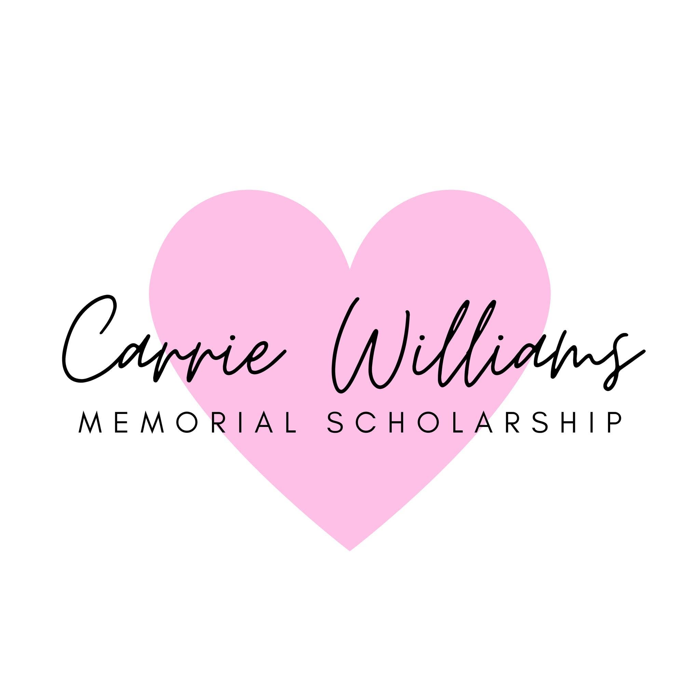

Her Story
Remembering Carrie Williams

Carrie Williams spent her career teaching at a local Catholic school, and the way she showed up for her students left a mark that didn't end when she passed away. Her family and friends founded this foundation to carry that spirit forward.
The Carrie Williams Memorial Scholarship supports children at Catholic schools throughout Northern Kentucky — a lasting way of continuing the work she cared about most.